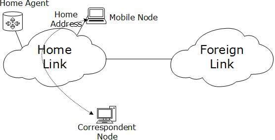

IPv6 - Mobility
When a host is connected to a link or network, it acquires an IP address and all communication take place using that IP address on that link. As soon as, the same host changes its physical location, that is, moves into another area / subnet / network / link, its IP address changes accordingly, and all the communication taking place on the host using old IP address, goes down.
IPv6 mobility provides a mechanism for the host to roam around different links without losing any communication/connection and its IP address.
Multiple entities are involved in this technology:- Mobile Node: The device that needs IPv6 mobility.
- Home Link: This link is configured with the home subnet prefix and this is where the Mobile IPv6 device gets its Home Address.
- Home Address: This is the address which the Mobile Node acquires from the Home Link. This is the permanent address of the Mobile Node. If the Mobile Node remains in the same Home Link, the communication among various entities take place as usual.
- Home Agent: This is a router that acts as a registrar for Mobile Nodes. Home Agent is connected to Home Link and maintains information about all Mobile Nodes, their Home Addresses, and their present IP addresses.
- Foreign Link: Any other Link that is not Mobile Node’s Home Link.
- Care-of Address: When a Mobile Node gets attached to a Foreign Link, it acquires a new IP address of that Foreign Link’s subnet. Home Agent maintains the information of both Home Address and Care-of Address. Multiple Care-of addresses can be assigned to a Mobile Node, but at any instance, only one Care-of Address has binding with the Home Address.
- Correspondent Node: Any IPv6 enabled device that intends to have communication with Mobile Node.
Mobility Operation
When Mobile Node stays in its Home Link, all communications take place on its Home Address as shown below:

When a Mobile Node leaves its Home Link and is connected to some Foreign Link, the Mobility feature of IPv6 comes into play. After getting connected to a Foreign Link, the Mobile Node acquires an IPv6 address from the Foreign Link. This address is called Care-of Address. The Mobile Node sends a binding request to its Home Agent with the new Care-of Address. The Home Agent binds the Mobile Node’s Home Address with the Care-of Address, establishing a Tunnel between both.
Whenever a Correspondent Node tries to establish connection with the Mobile Node (on its Home Address), the Home Agent intercepts the packet and forwards to Mobile Node’s Care-of Address over the Tunnel which was already established.